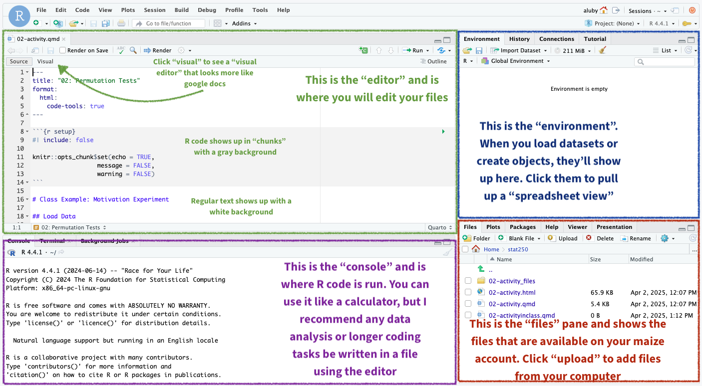
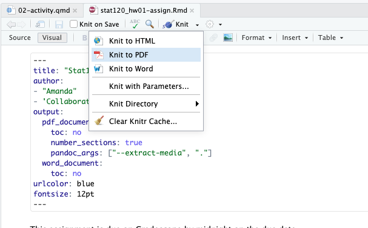
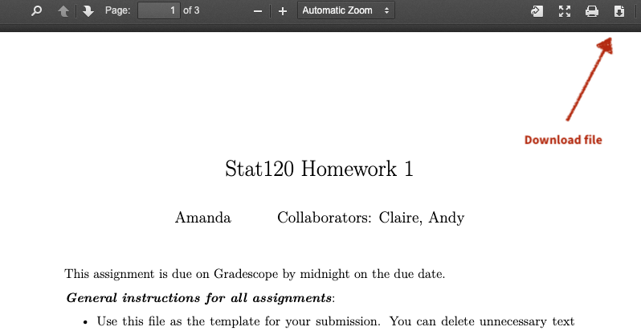

install.packages("tinytex")
tinytex::install_tinytex() # install TinyTeXUsing R for Homework in Stat250
In Stat250, I will distribute homework assignment templates in either .rmd or .qmd format.
Overview of Rstudio View
When you open up RStudio or maize, you should see something like the following. I’ve annotated the image below to show you the main features:
- The “editor” shows you the file you are currently working on. This is where you should edit your homework assignments and save as you go
- The “console” is where R code is run. You can use it like a calculator for short computations (like using
pnormto find a probability), but I recommend using the editor with a file for any data analysis or simulations. - The “environment” shows any datasets you’ve loaded or objects you’ve created
- The “files” pane shows the file folder you are currently in, and any files that are available. On maize, you can click “upload” to add files from your local computer. You can also click “blank file” to create a blank .rmd or .qmd to paste provided code into. Either is fine!

Uploading files to maize
- Click the “upload” button in the files pane
- Select the file from your local computer (likely in your Downloads folder if you downloaded from moodle)
- Choose the “Target Directory” – this is the folder on your maize account where the file will be saved. I recommend creating a “Stat250” folder for this class
Accessing maize from off campus
If you are using the maize server, you should be able to access it on campus with only your Carleton ID and password. If you plan to use the maize server and you plan to do any work off campus this term (e.g., while on a field trip, travel for athletics, or just sitting in Little Joy) you need to install Carleton’s VPN to have access.
To install the GlobalProtect VPN follow directions provided by ITS.
Rendering your document
To submit your homework, you will need to “render” (if .qmd) or “knit” (if .rmd) your final document to PDF.
- Click “knit” or “render” and choose “PDF” if given the option

- A “Popup blocked” message will appear. Hit “try again”
- A PDF should appear. Look it over and make sure it looks OK. If you want to submit it as is, click the “download” button in the upper right corner - this will download the PDF to your local computer, which you can then submit to gradescope.
 - If you’d like to make changes, just close the PDF and return to your .rmd or .qmd and repeat these steps
Tip
R and LaTeX are very picky when it comes to rendering PDF documents. If you copy and paste formatted text into your .rmd file, for example, it won’t render and you’ll get a bunch of error messages. Please don’t copy and paste anything directly into your .rmd files!
Tip
If you do get errors, you can try knitting or rendering to a word document (.docx) and then saving that to PDF. Remember that any time you knit, you will re-write the file, so any changes you make in your .docx file will not be saved!
LaTeX
You need a LaTeX compiler to create a pdf document from a R Markdown file. If you use the maize server, you don’t need to install anything (the server already has a LaTeX compiler). If you are using a local RStudio, you should install a Latex compiler.
Installing LaTeX (not needed if you are using the maize server)
If you don’t already have a tex package installed on your computer, the easiest option to create pdf’s is to use the tinytex R package. This can be installed with the following R commands:
If you’d like a standalone LaTeX package that will work with programs other than RStudio, you could install the basic installations of either:
If you’d like a stand alone LaTeX package, you could install the basic installations of either: